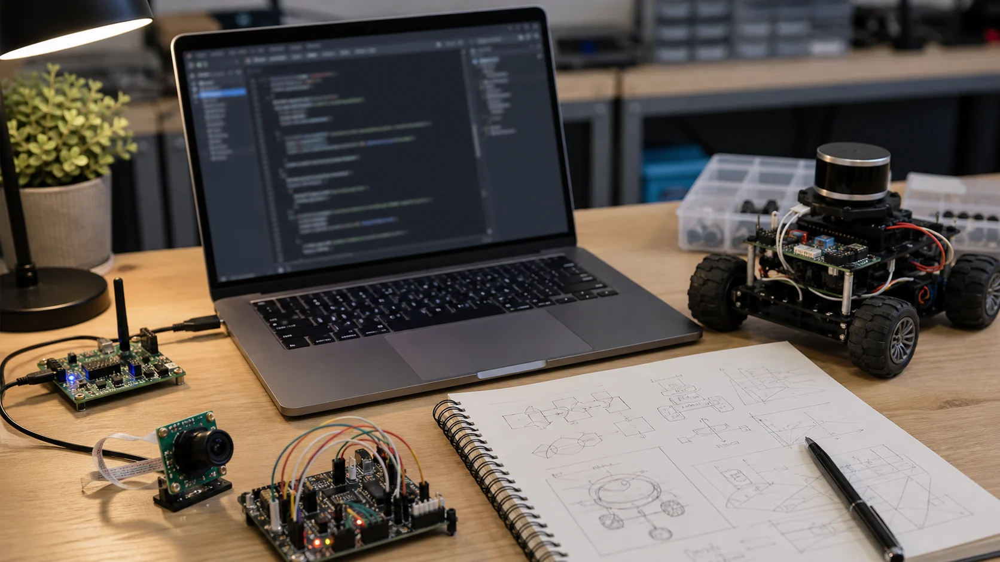

부록 R-A: Python for Robotics 치트시트
코스 전체에서 가장 자주 쓴 numpy · scipy · matplotlib · OpenCV 패턴을 한곳에 모았습니다. 실습하다 "그 한 줄 뭐였지?" 싶을 때 펴 보세요. (수치 예제는 전부 실제 실행 결과입니다.)

1. numpy — 배열 기초
import numpy as np
a = np.array([1.0, 2.0, 3.0]) # 1D 벡터
M = np.array([[1, 2], [3, 4]]) # 2D 행렬
np.zeros((2, 3)); np.ones(4); np.eye(3) # 0/1/단위행렬
np.linspace(0, 10, 5) # [0, 2.5, 5, 7.5, 10]
np.arange(0, 1, 0.25) # [0, 0.25, 0.5, 0.75]
a.shape; a.dtype; a.reshape(3, 1) # 모양·타입·재배열
a[0]; a[-1]; a[1:3]; M[:, 0]; M[0, :] # 인덱싱·슬라이싱(행/열)
a * 2; a + 1; a ** 2 # 브로드캐스트(원소별)
np.clip(a, 0, 2) # 범위 제한 [0,2]
np.cumsum(a); a.mean(); a.std() # 누적합·평균·표준편차(R0·R2)2. 벡터 — 거리 · 각도 · 방향 (R0·R1)
import numpy as np
a = np.array([1.0, 2.0]); b = np.array([4.0, 6.0])
np.linalg.norm(b - a) # 두 점 거리 → 5.0
np.dot(a, b) # 또는 a @ b # 내적
np.cross([1,0,0], [0,1,0]) # 외적(3D) → [0, 0, 1]
v = np.array([3.0, 4.0])
v / np.linalg.norm(v) # 단위벡터 → [0.6, 0.8]
np.degrees(np.arctan2(4, 3)) # 방향(도) → 53.13 (atan2(y, x)!)✅ 검증값
norm 5.0 · unit [0.6 0.8] · dot 0(수직) · cross [0 0 1] · atan2(4,3) 53.13°
3. 행렬 · 선형대수 (R0·R1·R4)
import numpy as np
A = np.array([[2.0, 0.0], [0.0, 3.0]])
A @ B # 행렬곱(@ 권장, 순서 중요!)
A.T # 전치
np.linalg.inv(A) # 역행렬 → [[0.5,0],[0,0.333]]
np.linalg.det(A) # 행렬식 → 6.0 (넓이 배율)
np.linalg.solve(A, np.array([2.,3.])) # Ax=b 풀기 → [1, 1] (inv보다 안정)
np.allclose(A @ np.linalg.inv(A), np.eye(2)) # 검증 → True4. 회전 · 변환 — numpy & scipy (R1)
직접 만든 회전행렬과, scipy로 오일러각↔쿼터니언↔행렬을 자유롭게 변환합니다(R1의 짐벌락 대안=쿼터니언).
import numpy as np
from scipy.spatial.transform import Rotation as Rot
# 직접 만든 2D/3D 회전행렬 (R1)
def rot_z(t):
c, s = np.cos(t), np.sin(t)
return np.array([[c,-s,0], [s,c,0], [0,0,1]])
# SE(3) 동차변환행렬 (R1·R7)
def make_T(R, p):
T = np.eye(4); T[:3,:3] = R; T[:3,3] = p; return T
# scipy: 오일러 ↔ 쿼터니언 ↔ 행렬 (실무 표준)
r = Rot.from_euler('z', 90, degrees=True)
r.as_quat() # 쿼터니언 (x,y,z,w) → [0, 0, 0.7071, 0.7071]
r.as_matrix() # 3x3 회전행렬
r.as_euler('xyz', degrees=True) # 오일러각 복원 → [0, 0, 90]
r.apply([1, 0, 0]) # 점 회전 → [0, 1, 0]
(Rot.from_euler('z', 30, degrees=True) * Rot.from_euler('x', 45, degrees=True)) # 회전 합성✅ 검증값 (z축 90°)
quat [0 0 0.7071 0.7071] · apply([1,0,0]) → [0 1 0] · euler 복원 [0 0 90]
5. 각도 유틸 (R0·R4)
import numpy as np
np.radians(180) # 도 → 라디안 (π ≈ 3.1416)
np.degrees(np.pi) # 라디안 → 도 (180)
np.arctan2(y, x) # 좌표 → 방향(사분면 구분) ※ 인자 순서 (y, x)
# 각도를 [-π, π] 범위로 감싸기 (heading 정규화에 필수)
def wrap_angle(a):
return (a + np.pi) % (2*np.pi) - np.pi
np.degrees(wrap_angle(np.radians(370))) # → 10.06. matplotlib — 빠른 시각화 (R0·R2·R5)
import matplotlib.pyplot as plt
import numpy as np
t = np.linspace(0, 10, 100)
plt.plot(t, np.sin(t), label="sin") # 선 그래프
plt.scatter([1,2,3], [4,5,6]) # 산점도
plt.plot(xs, ys, "o-") # 궤적(점+선)
plt.imshow(grid, cmap="gray") # 격자·이미지(R9)
plt.axhline(1.0, ls="--") # 기준선(목표값 등)
plt.xlabel("t"); plt.ylabel("y"); plt.legend(); plt.grid(True)
plt.savefig("out.png", dpi=130) # 저장 (또는 plt.show())7. OpenCV — 영상 처리 빠른 참조 (R8)
import cv2, numpy as np
img = cv2.imread("photo.jpg") # 읽기 (BGR 순서! RGB 아님)
gray = cv2.cvtColor(img, cv2.COLOR_BGR2GRAY)
hsv = cv2.cvtColor(img, cv2.COLOR_BGR2HSV) # H는 0~179
mask = cv2.inRange(hsv, (0,100,100), (10,255,255)) # 색 마스크
edges = cv2.Canny(blur, 50, 150) # 엣지
cnts, _ = cv2.findContours(mask, cv2.RETR_EXTERNAL, cv2.CHAIN_APPROX_SIMPLE)
x, y, w, h = cv2.boundingRect(cnts[0]) # 외접 사각형
# ArUco (OpenCV 4.7+)
d = cv2.aruco.getPredefinedDictionary(cv2.aruco.DICT_4X4_50)
det = cv2.aruco.ArucoDetector(d, cv2.aruco.DetectorParameters())
corners, ids, _ = det.detectMarkers(gray)8. 챕터별 "이건 어디서?" 빠른 색인
| 필요한 것 | 핵심 함수 | 챕터 |
|---|---|---|
| 거리·각도·단위벡터 | norm · arctan2 · cross | R0 |
| 회전·SE(3) 변환 | rot_z · make_T · scipy Rotation | R1 |
| 노이즈 필터 | np.convolve · 1D 칼만 | R2 |
| FK/IK·자코비안 | cos/sin 합성 · 코사인법칙 | R4 |
| PID 시뮬·그래프 | 적분 루프 · matplotlib | R5 |
| ROS 노드 | rclpy · create_publisher | R6 |
| 좌표 변환 트리 | SE(3) 합성 · invert_T | R7 |
| 영상 인식 | cv2.inRange · Canny · ArUco | R8 |
| 경로계획·위치추정 | A*(heapq) · 칼만 | R9 |
| 강화학습 | Q-러닝 갱신 · argmax | R10 |
💡 설치: pip install numpy scipy matplotlib opencv-python (ROS는 별도, R6 참고). 이 치트시트만 옆에 두면 대부분의 실습을 막힘 없이 따라갈 수 있습니다.